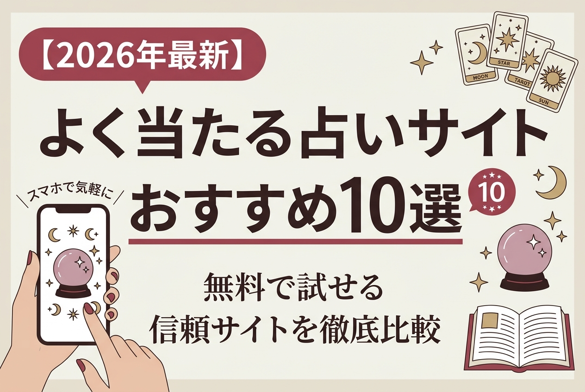
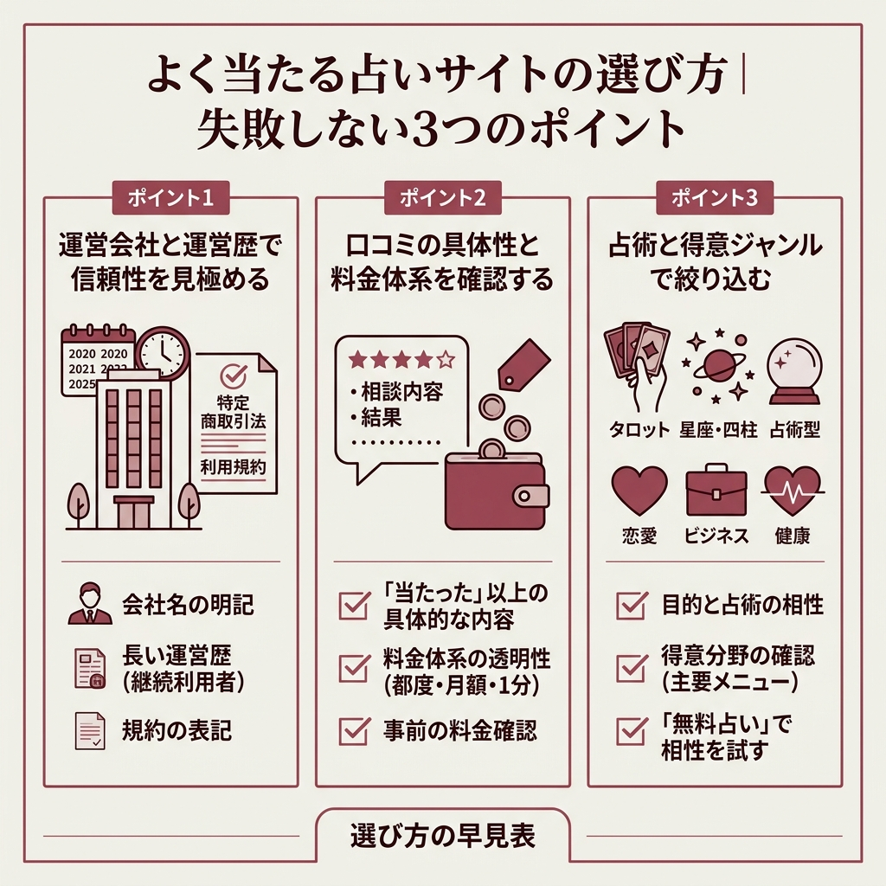
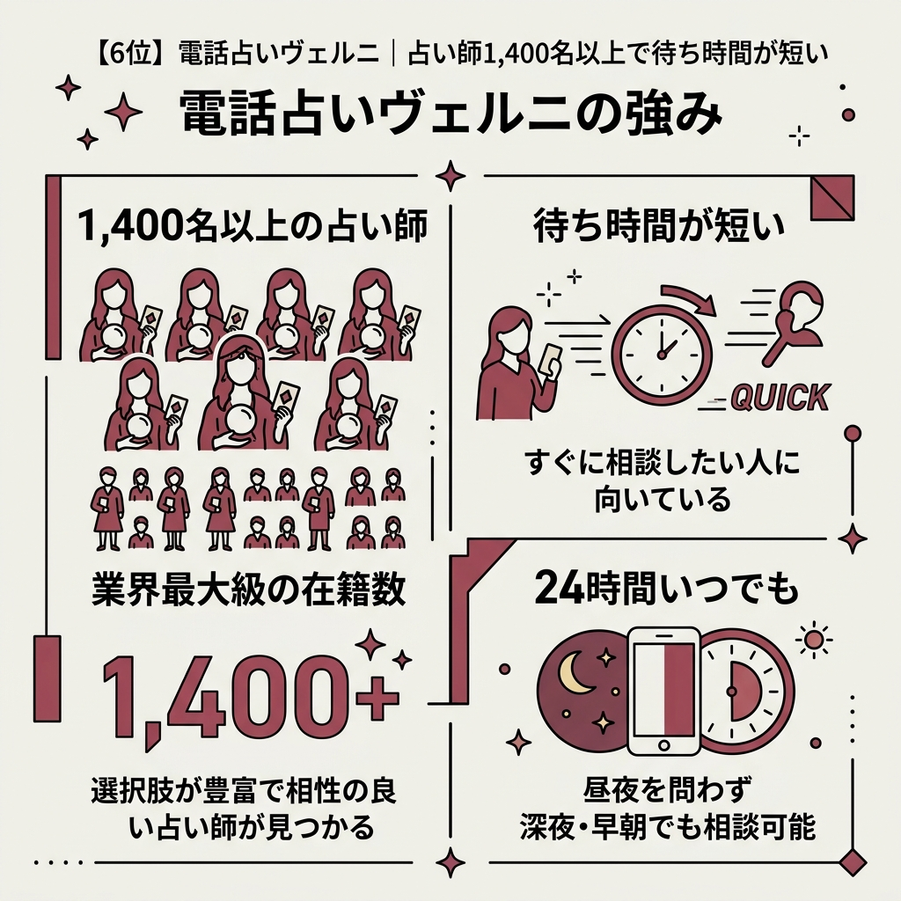
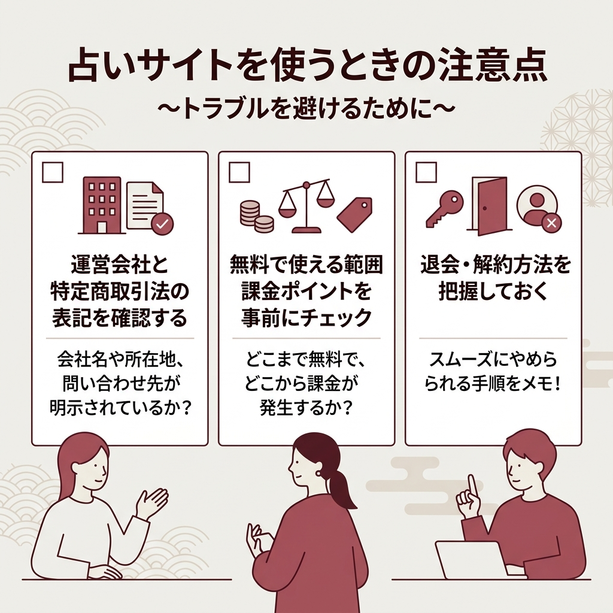
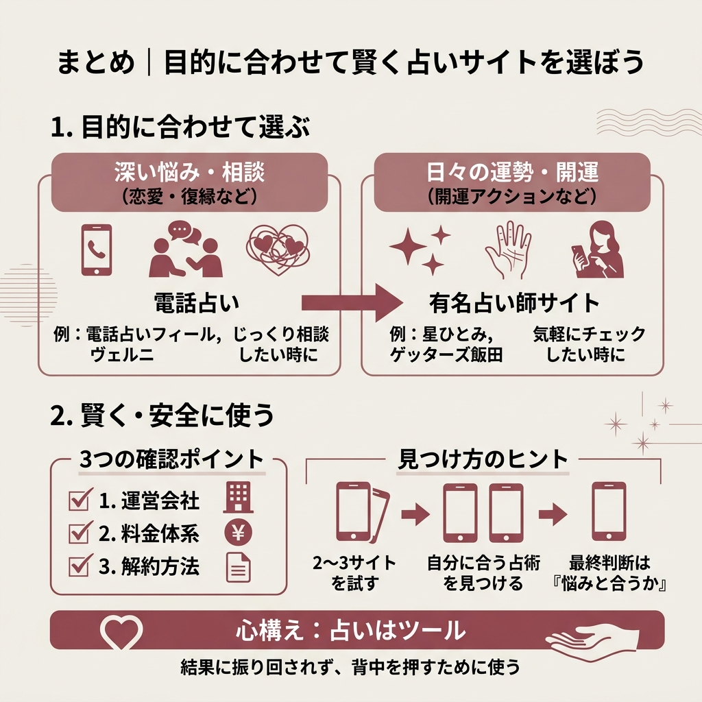

【2026年最新】よく当たる占いサイトおすすめ10選｜無料で試せる信頼サイトを徹底比較

スマホで気軽に占えるサイトは便利ですが、種類が多すぎて「どれが本当に当たるの？」と迷いがちです。
この記事では、上位記事でくり返し名前が挙がる人気サイトの中から、無料で試せて運営情報もしっかりしているサービスだけを厳選しました。
恋愛・復縁・運勢・開運まで、目的別に選べるように比較表とランキングを用意しています。
占いサイトって数が多すぎて、どれを選べばいいか全然わかりません…。無料でも本当に当たるサイトってあるんですか？
無料で試せる大手サイトでも、運営歴が長く有名占い師が監修しているところなら安心です。目的を決めて3〜4サイトを試すのが近道ですよ。
本記事の結論は次の比較表でサクッと確認できます。気になるサイトから順番に読み進めてください。
結論｜よく当たる占いサイトおすすめ10選 比較表
 出典: www.uchina-web.co.jp
出典: www.uchina-web.co.jp上位記事の情報と各サイトの特徴を踏まえ、10サイトを一覧にまとめました。
自分の目的に近いものから詳細セクションをチェックしてみてください。
| 順位・サイト | 得意ジャンル | ひと言特徴 |
|---|---|---|
| 1位 電話占いフィール | 恋愛・復縁 | 初回3,000円分無料 |
| 2位 星ひとみ天星術 | 恋愛・開運 | 手相診断に対応 |
| 3位 シウマ数意学 | 開運・数字 | 数字からの開運鑑定 |
| 4位 水晶玉子オリエンタル | 相性・日運 | 運命相性占いが得意 |
| 5位 ゲッターズ飯田 | 運勢・運気 | 五星三心占い |
| 6位 電話占いヴェルニ | 総合・即相談 | 占い師1,400名以上 |
| 7位 しいたけ占い | 週運・星座 | 毎週月曜更新 |
| 8位 島田秀平星相占い | 性格・相性 | 152パターン診断 |
| 9位 電話占いウィル | 初心者向け | 初回10分無料 |
| 10位 電話占いピュアリ | 個性派鑑定 | 占い師170人以上 |
順位は上位記事の共通評価と、無料で試せる範囲・占い師の在籍数・運営情報の明確さから総合的に判断しています。

よく当たる占いサイトの選び方｜失敗しない3つのポイント
 出典: www.mysta.co.jp
出典: www.mysta.co.jp「よく当たる」の判断基準は人それぞれで、正解は一つではありません。
ただし、信頼できるサイトを見抜くための共通ポイントは存在します。
ここでは上位記事で何度も触れられていた3つの視点に絞って紹介します。
運営情報・口コミの具体性・得意占術の3軸で絞り込むと、自分に合うサイトを短時間で選べます。
ポイント1｜運営会社と運営歴で信頼性を見極める
まず最初に確認したいのは、運営会社名と運営歴です。
運営会社が明示されていて、かつ運営歴が長いサイトほど継続利用者が多く、突然サイトが消える心配も少なくなります。
特定商取引法や利用規約の表記があるかどうかも合わせてチェックしましょう。
ポイント2｜口コミの具体性と料金体系を確認する
口コミは件数よりも中身を見るのがコツです。
「当たった」「感動した」だけの感想より、相談内容と鑑定結果が具体的に書かれている口コミの方が参考になります。
料金は都度課金か月額制か、電話占いなら1分単価はいくらかを事前に確認しておきましょう。
- 運営会社名と運営歴が明記されているか
- 特定商取引法や利用規約のページがあるか
- 料金プランが分かりやすく書かれているか
- 無料で試せる範囲が明確か
- 口コミに相談内容と結果の具体例があるか
ポイント3｜占術と得意ジャンルで絞り込む
占術には命占・卜占・相占などいろいろあります。
恋愛の行方を深掘りしたいなら相性占いやタロット、1年の大きな流れを知りたいなら四柱推命や天星術など、目的と占術の相性で選ぶのが近道です。
「恋愛に強い」と書かれていても、実際は仕事相談が中心のサイトもあります。
公式サイトのトップで紹介されている主要メニューを眺めて、得意ジャンルを見極めましょう。
占術の名前だけ見ても、自分に合うかどうかの判断が難しいです…。
最初は「無料でできる占い」を複数のサイトで同じテーマで占ってみてください。同じ答えが返ってきたサイトがあなたと相性のよい占術ですよ。
【1位】電話占いフィール｜初回3,000円分無料で試せる恋愛特化サイト
恋愛と復縁で迷っているなら、まず電話占いフィールを押さえておけば間違いありません。
人気タレントや有名人がプライベートで鑑定を依頼するほどの実力派占い師が集まっています。
気になるのは料金ですが、フィールは新規登録者に向けて初回3,000円分の無料鑑定を用意しています。
恋愛と復縁に強い占い師が120名以上も在籍しているため、自分の相談内容に合う先生を探しやすい環境です。
電話鑑定は24時間対応で、サポート窓口も朝9時から翌5時まで年中無休で稼働しています。
どうしても電話が苦手という人は、1通2,500円から利用できるメール占いも選べます。
- 初回3,000円分が無料で試せる
- 恋愛・復縁に強い占い師が120名以上
- 電話鑑定は24時間対応で夜中も相談しやすい
- メール占い（1通2,500円〜）にも対応
- 占い師ごとに料金が異なるため比較が必要
- 人気占い師は待機時間が発生することがある
在籍する人気占い師：明華先生の特徴
フィールの中でもテレビ・ラジオ出演の経歴を持つのが明華（あすか）先生です。
バラエティー番組『Girls Happy Style』やTBSラジオ『山里亮太の不毛な議論』などに出演しており、未来透視能力とタロットを組み合わせた鑑定で人気を集めています。
精度が高いと口コミでも評判で、メディア出演の多さが実力のひとつの目安になります。
初めてフィールを使うなら、明華先生のような実績のある先生から試すのがおすすめです。
【2位】星ひとみ☆幸せの天星術｜生年月日と手相から鑑定
テレビで一度は目にしたことがある星ひとみ先生のオリジナル占術が「天星術」です。
生年月日をベースにしつつ、手相や血液型の要素を組み合わせて鑑定するのが特徴で、恋愛に悩んでいる人向けのメニューが充実しています。
占いサイトの中では珍しく、手相診断までカバーしているのが嬉しいポイントです。
天星術で分かること
恋愛運の鑑定はもちろん、開運アクションまで具体的にアドバイスしてもらえます。
鑑定して終わりではなく、結果をどう日常に落とし込むかまで教えてくれるので、行動に移しやすい内容でした。
詳しい鑑定プランやキャンペーンは星ひとみ☆幸せの天星術 公式サイトでご確認ください。
【3位】シウマの1分開運数意学｜数字から開運アクションを導く
琉球風水志・シウマ先生の占いは「数」に意味があるという考え方がベースです。
生年月日や名前、さらには携帯電話の下4桁まで数字に変換して、その人が持つ運気や注意すべきポイントを鑑定します。
自分の名前から導く数字で、得意分野・苦手分野・今取るべき開運アクションが1分で確認できます。携帯番号の下4桁からラッキーナンバーを調べるメニューも用意されています。
1分という短時間で結果が出るため、毎朝の開運チェックとして使っている人も少なくありません。
公式はシウマの1分開運数意学から確認できます。
【4位】水晶玉子のオリエンタル占星術｜相性占いが強み
「日本一当たる」とテレビで紹介された水晶玉子先生。
オリエンタル占星術は日々の運勢を追える「オリエンタルカレンダー」が特徴で、気になる人との相性をスピーディーに鑑定できる運命相性占いに強みがあります。
多くの占い師から一目置かれるほどの実力者で、相性の深掘りをしたい人にぴったりです。
気になる人との相性をちゃんと知りたいんですが、どのサイトがいいですか？
相性ひとつに絞るなら水晶玉子先生のオリエンタル占星術がわかりやすいです。日々の占いメニューもあるので、関係の変化を追いやすいですよ。
公式サイトは水晶玉子のオリエンタル占星術です。
【5位】ゲッターズ飯田の占い｜五星三心占いで運気グラフが見える
独自の占術「五星三心占い」で知られるゲッターズ飯田先生。
普段は「紹介者がいないと鑑定しない」と言われるほどですが、公式サイト経由なら対面しなくてもこの先生の占いを受けられます。
1年の運気グラフや今日の運勢、恋愛占いなど幅広いメニューが揃っており、節目のタイミングで見直すのに向いています。
今日の運勢から運気グラフ、恋愛に関する占いなど幅広く占ってくれるので人気度は高いです。
uchina-web.co.jp の紹介文より
公式はゲッターズ飯田の占いです。

【6位】電話占いヴェルニ｜占い師1,400名以上で待ち時間が短い
すぐに相談したい、しかも待たされたくない。そんな人に向いているのが電話占いヴェルニです。
ヴェルニ最大の強みは、在籍占い師の数です。
1,400名以上の占い師が常時待機しているため、時間帯を問わず誰かしら相談相手が見つかります。
もちろん人気占い師は多少待つこともありますが、全体として待ち時間が短い構造は大きな魅力です。
詳細は電話占いヴェルニ 公式サイトをチェックしてみてください。
【7位】しいたけ占い｜毎週月曜に更新される星座別の週運
 出典: firstcatch.co.jp
出典: firstcatch.co.jpしいたけ占いは、毎週月曜日に星座別で今週の運勢が更新される人気コンテンツです。
2023年7月10日に再開されてから、再び話題になりました。
自分の星座をクリックすると、その週の過ごし方と気をつけるべきポイントまでアドバイスがもらえます。
しかもこれが無料で読めるので、月曜の朝に開くのが習慣になっている人は少なくありません。
サイト名のインパクトで敬遠している人もいますが、可愛いイラストと読みやすい文章でファンを増やし続けています。
公式はしいたけ占いです。
【8位】島田秀平の星相占い｜152パターンで性格と運勢を丸ごと診断
手相占いのイメージが強い島田秀平先生ですが、Webでは星相占いを提供しています。
会員登録すると、星相から152パターンの性格診断が可能です。
サイト上では94％のユーザーが「的中した」と回答していると紹介されています。
解説はユニークで分かりやすく、占いが初めての人でも取り組みやすい構成です。
公式サイトは島田秀平の星相占いから確認できます。
【9位】電話占いウィル｜初回10分無料で初心者向けのサポート体制
初めて電話占いを使う人に一番やさしいのが電話占いウィルです。
初回10分無料の特典があり、まず気軽に試してから使い続けるかどうかを判断できます。
電話占いに対する漠然とした不安は、運営のサポート窓口に問い合わせればすぐに解消できます。
「鑑定の流れが分からない」「こんな相談をしていいのか不安」といった初歩的な疑問にも丁寧に対応してくれる体制が整っています。
詳細は電話占いウィル 公式サイトで確認できます。
【10位】電話占いピュアリ｜個性派の占い師170人以上が集結
「他のサイトの鑑定では物足りなかった」。そんな人にこそ試してほしいのが電話占いピュアリです。
在籍占い師は170人以上で、それぞれに個性があり、メディアに露出している先生も多く在籍しています。
宣伝にも力を入れていて利用者が年々増えており、在籍数が多いため待ち時間も抑えやすい設計です。
公式は電話占いピュアリからどうぞ。

占いサイトを使うときの注意点｜トラブルを避けるために
便利な占いサイトですが、使い方を間違えるとトラブルに巻き込まれることもあります。
ここでは安全に楽しむための注意点をまとめます。
占い結果への過度な期待や依存は避け、最終的な行動判断は自分自身で行いましょう。不安な気持ちにつけ込む強引な課金誘導には特に注意してください。
依存しすぎないこと
占いは未来を決めつけるものではなく、選択肢を増やすためのヒントです。
結果を鵜呑みにして行動を縛ってしまうと、かえって大事なチャンスを逃しかねません。
「へぇ、そういう見方もあるんだ」くらいの距離感で付き合うのが、占いを楽しむ上での王道です。
課金トラブルを避けるために
一部のサイトでは、課金誘導が強引だったり料金体系が分かりにくかったりするケースも報告されています。
初回キャンペーンに惹かれて登録する前に、2回目以降の料金と解約方法を必ず確認しましょう。
運営会社と特定商取引法の表記を確認する
会社名や所在地、問い合わせ先が明示されていないサイトは避けましょう。
無料で使える範囲と課金ポイントを事前にチェック
どこまでが無料で、どこから課金が発生するかを登録前に確認しておきます。
退会・解約方法を把握しておく
万が一合わなかったときに、スムーズにやめられる手順をメモしておきましょう。
無料と書いてあったのに、気づいたら有料になっていたらどうしよう…。
決済情報の登録前に「特定商取引法の表記」ページを読むのがコツです。料金と解約手順が載っていれば、基本的には安全なサイトと判断してよいでしょう。
よく当たる占いサイトに関するよくある質問

まとめ｜目的に合わせて賢く占いサイトを選ぼう
10サイトを比較してみると、選び方はシンプルです。
恋愛・復縁の深い相談は電話占い、日々のチェックや開運アクションは有名占い師監修のポータル型が向いています。
- 電話占いフィールは初回3,000円分無料で、恋愛と復縁に強い
- 星ひとみ・シウマ・水晶玉子・ゲッターズ飯田などTVでおなじみの占い師サイトは、無料メニューから気軽に試せる
- 電話占いヴェルニは1,400名以上の占い師が在籍し、即時相談に向いている
- 安全に使うなら運営会社・料金・解約方法の3点を登録前に確認する
どのサイトも「自分の悩みと合うかどうか」が最終的な決め手になります。
気になる2〜3サイトで同じテーマを占い、しっくりくる占術を見つけるのが遠回りのようで一番確実な方法です。
調べれば調べるほど、占いはツールだと実感します。大事なのは結果に振り回されず、自分の背中を押すために使うことだと感じました。